Spark event log: the records a later reader can replay
component index
The event log records what Spark reported about an application attempt. The producer is EventLoggingListener in the driver JVM; the durable output is a file or directory on the configured filesystem. The History Server reads that output later. No History Server connection is involved in a write, and the live UI does not need event logging to work.
Flow at a glance
- Log startup: With event logging enabled, the driver opens the attempt's log and writes the Spark version.
- Event listener: Encodes each selected event from its queue as one JSON line.
- Log writer: The writer flushes at stage completion and finalizes the log on orderly shutdown.
Key distinction: A failed task's record can name its executor and end reason; look in the YARN container log for raw stdout.
Show the animated flow

From listener callback to stored record
- Open. With
spark.eventLog.enabled=true (off by default), SparkContext constructs and starts the listener after obtaining the application ID and optional attempt ID. It passes the event-log base URI, Spark and Hadoop configuration. The writer needs an existing writable base directory. It opens its output and writes and flushes SparkListenerLogStart with the Spark version, then the context registers it on the dedicated eventLog queue.
- Encode. The listener bus dispatches typed events on that queue's thread.
JsonProtocol turns a selected event into one JSON object, written as one UTF-8 line before optional compression. A SparkListenerTaskEnd record has an Event discriminator, Stage ID, Stage Attempt ID, Task Type, Task End Reason, Task Info, executor metrics and, when available, Task Metrics. It contains neither the computed partition nor the task's stdout.
- Select and flush. Task starts/ends can remain buffered; stage completion, job start/end, executor changes and application end request a flush. The writer flushes its buffer and calls
hflush on a Hadoop output stream when requested. Stage/job properties and environment updates have redaction paths. This is not a promise that every listener event is persisted: block updates are opt-in and metrics have a special path. With spark.eventLog.logStageExecutorMetrics, the listener accumulates peaks per (stageId, stageAttemptId, executorId) and emits stage summaries at stage completion; it does not record every executor heartbeat. Configured event names can also be excluded.
- Close. On orderly shutdown the context posts application end, stops the bus, then stops the writer. Application end need not be the very last JSON line. Writer finalization marks the end of writing, not a successful job outcome.
The two on-disk layouts
| Writer |
While the driver is running |
At clean writer shutdown |
| Single file |
One attempt-specific file, with optional codec suffix and .inprogress. |
Close and rename the file without .inprogress. |
| Rolling files |
eventlog_v2_<key> (key identifies the app and optional attempt) contains numbered events_<index>_<key> segments, optionally with a codec suffix, and a zero-byte appstatus_<key>.inprogress marker. Rollover uses the pre-compression stream count plus the next JSON string length, not the compressed file size. |
Close the current segment and rename the status marker; do not rename every segment. |
spark.eventLog.rolling.enabled selects the writer (true at this revision). Use a filesystem URI visible to the driver and the history service, e.g. a shared HDFS directory. Two machines can resolve the same file: pathname to different local files.
Worked example: one failed attempt, two kinds of evidence
Suppose an orders task fails in stage 3, attempt 0. The event log can supply the task attempt ID, executor ID, times and structured failure reason. A later successful attempt for the same partition is a different event; it does not erase the failed attempt. This is what lets history reconstruct a retry. A diagnostic println next to the failing code is not another event. For raw process output, consult driver or executor logs: YARN launch commands redirect AM stdout/stderr and executor stdout/stderr to their container log directories; a client-mode driver's own output stays on the client. A failure event can contain exception text without containing the full process log.
If the last attempts are missing: look for queue drops in the driver, the event filter/settings, writer I/O errors, and an in-progress file/marker. A killed driver may leave buffered records unwritten and no application-end event. Opening the live UI or starting the History Server later cannot regenerate those records. Event logging is also distinct from an RDD/stream checkpoint: replay reconstructs status, not an executable Spark application.